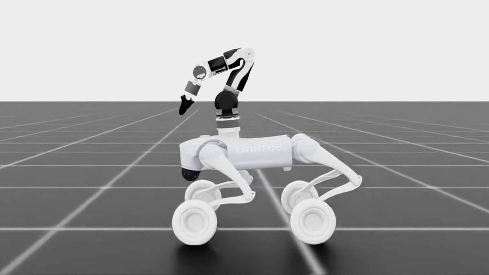
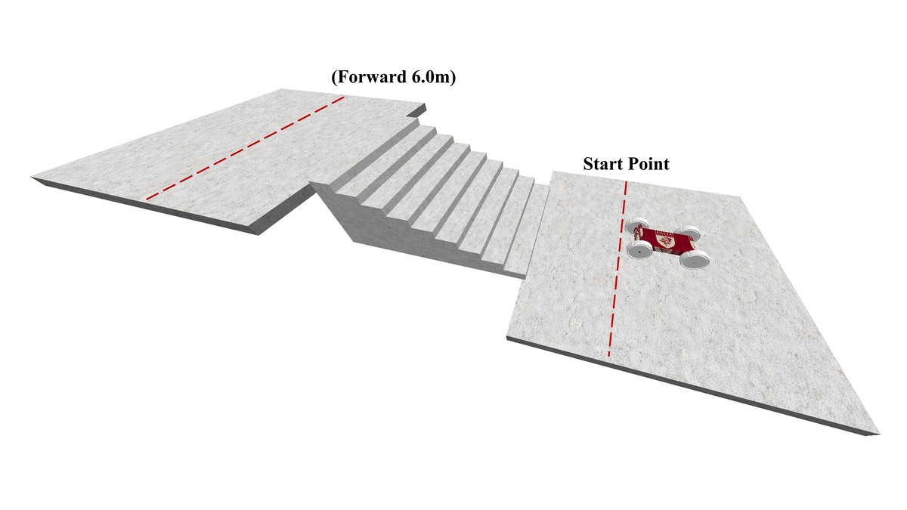
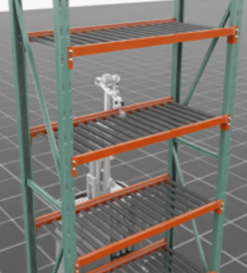
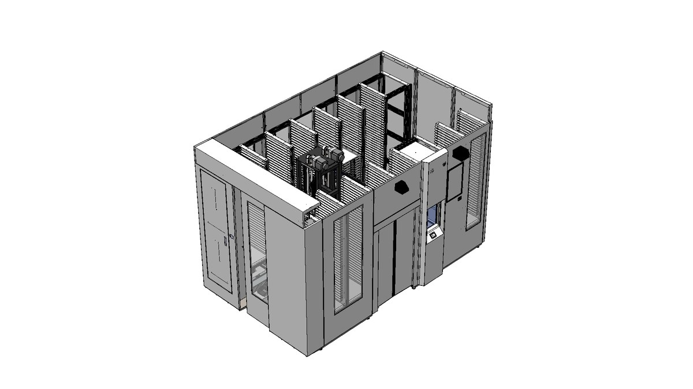
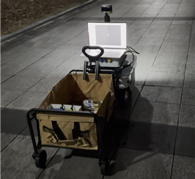
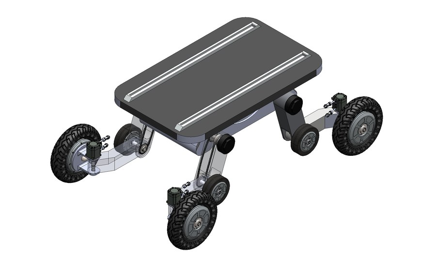
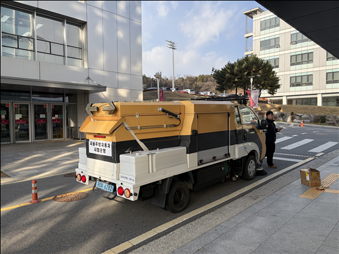
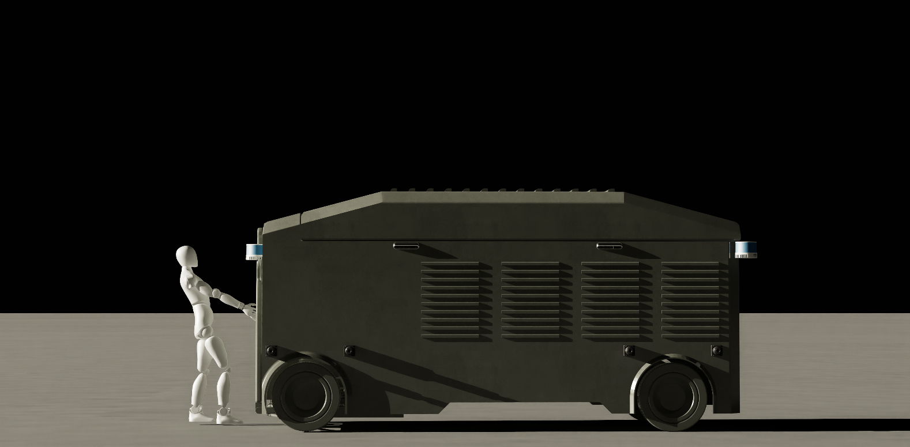

Korea University
M.S. Candidate, Department of Mobility Science and Engineering미래모빌리티학과 석사과정
Field Robot Lab, Advisor: Prof. Youngeun Song필드로봇연구실, 지도교수: 송영은 교수
Robotics · Mobility Science로보틱스 · 모빌리티
M.S. Candidate, Field Robot Lab, Korea University 고려대학교 필드로봇연구실 석사과정
I work on simulation-first robot design and validation. My current focus is wheeled-legged robots, mobile manipulators, and indoor AMRs, covering mechanism design, learning-based control, and ROS2/Autoware integration. 로봇을 만들기 전, 시뮬레이션에서 구조와 제어를 먼저 검증합니다. 현재는 wheeled-legged robot, mobile manipulator, 실내 AMR을 중심으로 메커니즘 설계, 학습 기반 제어, ROS2/Autoware 통합을 연구하고 있습니다.
Research direction연구 방향
Wheeled-legged robots, mobile manipulation, AMR systems, field integrationWheeled-legged robot, mobile manipulation, AMR system, 현장 통합
Isaac Sim/Lab, RSL-RL, Bayesian optimization, ROS2/Autoware, LiDAR perception, Unitree Go2W + OpenArm, 20-DOF AMR, Ranger Mini v2
KALO wheeled-legged platform, CEBO stair-climbing wheel, lift-equipped mobile manipulator, indoor AMR integrationKALO wheeled-legged platform, CEBO stair-climbing wheel, lift-equipped mobile manipulator, 실내 AMR 통합
Updates업데이트
Research output연구 성과
Electronics, 2025 · Published
Contribution: scheduling logic and elevator-selection performance analysis for indoor delivery robot path planning. 기여: 실내 배송 로봇 경로 계획을 위한 스케줄링 로직 제작 및 엘리베이터 선택 성능 분석.
DOISensors, 2025 · Published
Contribution: LiDAR-based human detection and Kalman-filter tracking modules for indoor AMR operation. 기여: 실내 AMR 운용을 위한 LiDAR 기반 사람 감지 및 Kalman filter 추적 모듈 구현.
DOIAdvanced Engineering Informatics · Minor revision
Contribution: T-shaped pedal wheel design, CEBO-based optimization study, and simulation experiment automation. 기여: T-shaped pedal wheel 설계, CEBO 기반 최적화 연구, 시뮬레이션 실험 자동화.
IEEE/ASME AIM 2026 · Accepted
Contribution: arm-swing launch concept proposal and Unitree Go2W-OpenArm validation in Isaac Lab. 기여: arm-swing launch concept 제안 및 Unitree Go2W-OpenArm 구성을 Isaac Lab에서 검증.
IEEE/ASME AIM 2026 · Accepted
Contribution: platform design, Isaac Lab reinforcement-learning setup, and shelf-transfer experiments. 기여: 플랫폼 설계, Isaac Lab 강화학습 환경 구성, shelf-transfer 실험.
IEEE CASE 2026 · Under review
Contribution: reinforcement-learning formulation, delivery-robot system implementation, and training-result analysis. 기여: 강화학습 문제 구성, 배송 로봇 시스템 구현, 학습 결과 분석.
Contribution: ODD, fail-safety/SOTIF, validation-scenario, and TDP documentation for a 1-ton road-sweeping vehicle.기여: 1톤급 노면 청소차의 ODD, fail-safety/SOTIF, 검증 시나리오, TDP 문서화.
Contribution: LiDAR-based human detection, Kalman-filter tracking, and avoidance module implementation.기여: LiDAR 기반 사람 감지, Kalman filter 기반 추적, 회피 솔루션 구현.
Contribution: DQN-based loading-policy formulation and result analysis for hub logistics operation.기여: 거점 물류 운영을 위한 DQN 기반 적재 정책 구성 및 결과 분석.
Contribution: fail-safety taxonomy and fault-scenario analysis for driving, cleaning, and path-planning modules.기여: 주행부, 청소부, 경로계획 모듈의 fail-safety 분류 및 고장 시나리오 분석.
Contribution: point-cloud perception pipeline for object detection in narrow indoor navigation settings.기여: 협소한 실내 주행 환경의 객체 탐지를 위한 PointCloud 기반 인지 파이프라인 구성.
Contribution: lightweight LiDAR perception-module design and embedded-system efficiency analysis.기여: LiDAR 인식 모듈 경량화 설계 및 임베디드 시스템 효율 분석.
Contribution: logistics-distribution logic for autonomous delivery in local hub systems.기여: 지역 물류 허브 시스템의 자율 배송을 위한 물류 분배 로직 구성.
Research work연구 프로젝트

Kangaroo-inspired arm-swing launch concept for a Unitree Go2W-OpenArm wheeled-legged platform, validated in Isaac Lab/RSL-RL. Unitree Go2W-OpenArm 기반 wheeled-legged platform에 kangaroo-inspired arm-swing launch 개념을 적용하고 Isaac Lab/RSL-RL에서 검증했습니다.

Clustering-enhanced Bayesian optimization for six-variable T-pedal wheel design, tested on benchmark functions and Isaac simulation experiments. 6변수 T-pedal wheel 설계를 위해 clustering-enhanced Bayesian optimization을 구성하고 benchmark 및 Isaac 시뮬레이션 실험에 적용했습니다.

Mobile-manipulator platform for shelf transfer in multi-level rack environments, with Isaac Lab reinforcement-learning experiments. 다단 랙 환경의 shelf transfer를 위한 lift-equipped mobile manipulator 플랫폼과 Isaac Lab 강화학습 실험 환경을 구성했습니다.

Reinforcement-learning formulation and system implementation for a local delivery robot with a dual-handler logistics setup. Dual-handler 물류 구성을 갖는 지역 배송 로봇 시스템에서 강화학습 문제 구성과 시스템 구현, 실험 분석을 수행했습니다.

End-to-end integration of a Ranger Mini v2 campus parcel-delivery robot, from hardware inspection and CAN wiring to ROS2/Autoware, LiDAR SLAM, and human-aware navigation modules. Ranger Mini v2 기반 교내 택배 운송 로봇을 대상으로 하드웨어 검수, CAN 배선, ROS2/Autoware, LiDAR SLAM, 사람 인지 항법 모듈까지 end-to-end로 통합했습니다.

Isaac Lab migration and baseline pitch-RMS comparison for a 10 m-class inventory-inspection robot.10 m급 재고조사 로봇의 Isaac Lab 이전과 baseline 대비 pitch RMS 비교.

Pre-fabrication simulation environment and upper-platform stabilization for a steering-joint AMR.조향 조인트가 포함된 AMR의 제작 전 시뮬레이션 환경과 상판 안정화 검토.

ODD, fail-safety/SOTIF, and validation-scenario documentation for a 1-ton road-sweeping vehicle. Related presentations: IEMEK Spring 2024 and IEMEK Fall 2025.1톤급 노면 청소차의 ODD, fail-safety/SOTIF, 검증 시나리오 문서화. 관련 발표: 2024 대한임베디드공학회 춘계, 2025 대한임베디드공학회 추계.
Living-lab testbed planning and final-report work for unmanned delivery robots in apartment complexes.공동주택 내 무인이송체 실증을 위한 리빙랩형 테스트베드 기획과 최종보고서 작성.

Autonomous/remote towing structure, sensor layout, collision-prevention concept, and Isaac Sim review.자율·원격 견인 구조, 센서 배치, 충돌 방지 개념, Isaac Sim 기반 1차 검토.
Background배경
M.S. Candidate, Department of Mobility Science and Engineering미래모빌리티학과 석사과정
Field Robot Lab, Advisor: Prof. Youngeun Song필드로봇연구실, 지도교수: 송영은 교수
B.S., Department of Mobility Science and Engineering미래모빌리티학과 학사
Autonomous Driving System, Convergence Major자율주행시스템전공, 융합전공
Recognition성과
Technical skills기술 역량
Simulation / robot learning Isaac Sim, Isaac Lab, RSL-RL, PyTorch, reinforcement learning, Bayesian optimization
Robot software / integration ROS, ROS2, Autoware, Python, C++, Linux, CUDA, CAN, Git
Perception / navigation LiDAR, SLAM, OpenCV, YOLO, DBSCAN, Kalman Filter
Design / validation CoppeliaSim, Ansys, CAD, hardware feasibility testing
Email이메일